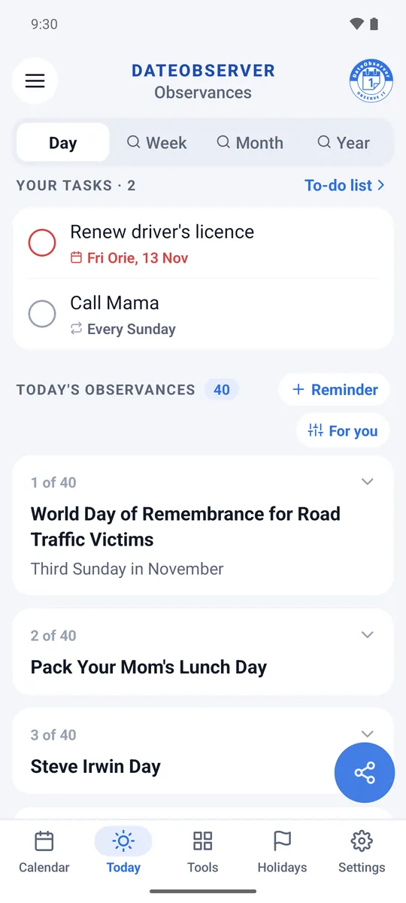

DateObserver: one calendar for the entire world
A calendar app on Google Play that knows what every country and faith observes on any day, works out moving festivals from the Sun and Moon, and keeps everything on the phone. Designed, built and published by me.
- 11,000+observances a year
- 199countries named
- 200+countries' holidays
- 219automated tests



The problem
Most calendars know one country's holidays. Lists of "days" online are dominated by one country's novelty days, and the festivals that hundreds of millions of people actually keep, from Diwali to Eid to the Lunar New Year, move every year, so a fixed date is wrong most of the time. In Nigeria, many people also live by the four-day Igbo market week (Eke, Orie, Afọ, Nkwọ), which no mainstream calendar shows.
I wanted one app that answers, for anyone, anywhere: what does the world observe today, what does my country observe, and when is the next day that matters to me?
What I built
- A calendar with the Igbo market day under every date, and Day, Week, Month and Year views, each searchable.
- Public holidays for 200+ countries for any year, long weekends ahead, and the countries you follow.
- Reminders that can ring as full-screen alarms, a to-do list, a clock with timer and stopwatch, and nine home-screen widgets.
- A daily note picked for your interests, and lists ordered with the world and your country first.
- "Post a day": any observance becomes a picture post for WhatsApp, Facebook, X, Instagram, TikTok or Messenger, plus Post ideas for every day of the week.
- A date calculator ("100 days from today", "the 2nd Orie of March", leap years) and voluntary support through Google Play Billing.
Engineering highlights
Festivals worked out from astronomy
Hindu, Sikh, Jain and Buddhist festivals follow a lunisolar calendar. I implemented it from first principles with Jean Meeus's astronomical algorithms: a lunar month runs from new moon to new moon and takes its name from the sidereal sign the Sun is in at its start; a lunar day (tithi) is each 12° the Moon gains on the Sun; leap months are detected and skipped. Each festival is kept on the day its tithi holds at the time tradition specifies (sunrise, midday, evening, moonrise or midnight in India), with rules such as keeping Holika Dahan clear of bhadra.
I verified the results against India's published festival dates for 2023 to 2027: 126 of 126 checks match. Where official reckonings follow local practice that astronomy can't reproduce (Sri Lanka's monthly Poya days, Thailand's leap months), the app leaves the day out rather than show a wrong date.
A dataset of the world's days
I combined the app's original list with Wikipedia's 366 day pages and
every country's fixed-date holidays from the open-source
date-holidays library, adding 4,500+ observances. A
de-duplication pass compared each new day against everything already
on that date and the days either side, including spelling variants,
so nothing appears twice. Chinese, Korean, Islamic and Hebrew calendar
days are computed for each year.
Native Android where React Native wasn't enough
The app is React Native, with native Java modules for what the
platform demands: home-screen widgets, an alarm service that opens a
full-screen alarm over the lock screen, an in-app web sheet, and a
posting module that hands each picture to the right app through a
FileProvider, with each app's own share options.
Fast on ordinary phones
Holiday rules for Chinese-calendar countries each created a new calendar with an empty astronomy cache. Sharing those caches safely took a test batch of 15 countries over 21 years from 65 seconds to 9, with identical results. A whole year of observances is built once and kept, so Week, Month and Year views open instantly.
Private by design
There is no server and no account. Everything a person adds stays on their phone, notifications are scheduled locally, and payments go through Google Play. The privacy policy is short because there's very little to say.
Quality
219 automated tests (Jest) cover the calendars, the data, the ordering, reminders and notifications. Releases go through Google Play's closed testing with real users, and the app ships with a complete user guide in two editions, for desktop and for phones.
Stack
- React Native
- JavaScript
- Redux
- Java (Android)
- Notifee
- date-holidays
- astronomia (Meeus)
- Google Play Billing
- Jest